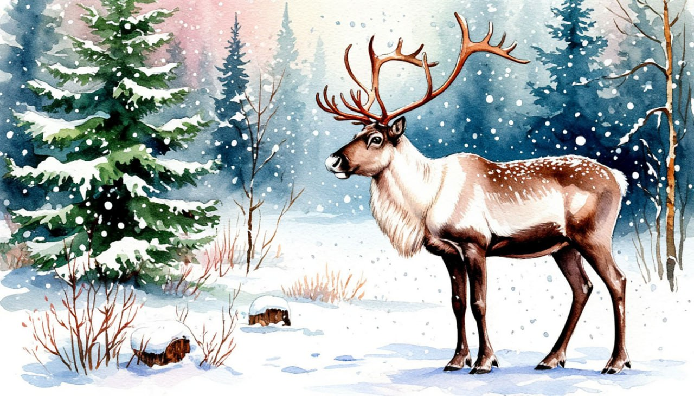

Снежная Карелия: Рождество

Даты тура: с 3 января 2026 года (сб) по 7 января 2026 года (ср)
Стоимость тура:
- 33 700 р. - взрослый
- 33 400 р. - пенсионеры/школьники
- 39 700 р./чел - одноместное размещение
По программе:
- - невероятные виды Ладожских шхер с вершины горы Паасанвуори
- - волшебная поездка на ретропоезде к мраморному каньону Рускеала
- - прогулки по пушистому снегу с озорными хаски и северными оленямиу
- - посещение старинного вепсского села – Шелтозеро, легенды о первых жителях Приладожья
- - памятные фото из долины водопадов!
Программа тура:
1 день:
- 14-30- выезд из Костромы от ТРЦ "РИО". Ночной переезд.
2 день:
- Прибытие в Петразаводск.
- Завтрак в кафе города.
- Обзорная экскурсия по Петрозаводску: посещение кафедрального собора Александра Невского, осмотр памятника Петру I – основателю города. Прогулка-экскурсия по набережной.
- Петрозаводск, ровесник и почти тезка Петербурга, был основан в устье реки Лососинки, на берегу Онежского озера, по велению Петра I, и тоже назван в честь царя-реформатора. Это индустриальный, культурный и научный центр с богатой историей. Здесь располагаются высшие учебные заведения, филиалы Академии наук, театры и музеи, промышленные предприятия.
- Обед.
- Свободное время в городе.
- ИЛИ
- - участие в мастер-классе по приготовлению калиток (за доп. плату)*.
- Карельская калитка – это традиционный ржаной пирожок. Карельские женщины говорили: «Kalittoa - kyzyy kaheksoa», что означает «Калитка просит восьмёрки», то есть чтобы испечь калитки, нужно восемь компонентов: мука, вода, простокваша, соль, молоко, сметана, масло и начинка (картофель, крупа, толокно).
- На мастер-классе Вас научат готовить специальное тесто и начинку для калиток. Тесто Вы научитесь правильно раскатывать и «защипывать». Начинка может быть любая! Традиционная же начинка калитки - картофельное пюре с маслом и молоком, а также разнообразные каши. А в самом конце Вас ждёт самая вкусная часть программы - дегустация готового блюда, изготовленного собственноручно, с ароматным карельским чаем. Мастер-класс по вкусной карельской традиции будет интересен и взрослым, и детям!
- Сбор группы. Отправление в гостиницу.
3 день:
- Рускеала*+ ретропоезд*
- Завтрак.
- Свободное время на базе отдыха, которое можно посвятить прогулкам на свежем воздухе
- ИЛИ
- - отправиться в экскурсионную поездку в горный парк «Рускеала» (за доп. плату)*.
- Данная поездка предполагает дополнительную опцию (за доп. плату)* - поездку на Рускеальском экспрессе (из Сортавалы в Рускеалу или наоборот - на усмотрение Туроператора).
- «Рускеальский экспресс» — настоящее волшебство! Напоминающий знаменитый "Хогвартский экспресс" поезд курсирует между горным парком Рускеала и бывшим финским городком Сортавала.
- Поезд на паровозной тяге способен разогнаться до 40-60 км/ч и состоит из вагонов, стилизованных под конец XIX - начала XX века. Путешествие на этом поезде принесет множество положительных эмоций и оставит в памяти незабываемые впечатления от интерьера вагонов царского времени и паровоза, окутанного клубами пара и дыма. Почувствуйте запах ушедшей железнодорожной эпохи от поездки на старинном поезде!
- Экскурсия по горному парку Рускеала. Самые знаменитые каменоломни Северо-Запада России, среди которых выделяется затопленный водой старый мраморный каньон и древние штольни.
- Отвесные мраморные скалы уходят вертикально вниз и обрываются в изумрудно-зелёную воду, а вокруг карьера проложена ухоженная и благоустроенная тропа, с которой открываются замечательные виды.
- Отвесные мраморные скалы уходят вертикально вниз и обрываются в изумрудно-зелёную воду, а вокруг карьера проложена ухоженная и благоустроенная тропа, с которой открываются замечательные виды.
- Свободное время в парке на покупку сувениров.
- Возвращение в гостиницу.
4 день:
- Сортавала + Долина водопадов
- Завтрак.
- Ранее отправление в Сортавалу (Питкяранта → Сортавала: 70 км).
- По пути - остановка для подъёма на самую живописную смотровую площадку этой части Карелии - гору Паасанвуори. Отсюда, как на ладони, открывается удивительная красота карельской природы: панорама озера Кармаланярви, реки Хелюлянйоки и простирающихся до горизонта лесов. Экскурсионная тропа на вершину обустроена и красиво подсвечена, что делает прогулку ещё более впечатляющей.
- Прибытие в Сортавалу - один из древнейших и красивейших городов Республики Карелия. Сортавала отличается от других городов Карелии своеобразием историко-культурного облика, сформированного тремя государствами: Швецией, Финляндией и Россией. У города три имени, три даты рождения, а в своё время даже существовало три треугольные площади (на данный момент осталось две).
- Обед.
- Вас ждёт прогулка вдоль реки Иййоки в долине водопадов: чарующие красотой северные пейзажи, свежий воздух и, конечно, великолепные фото на память. Далее проследуем по усадьбе Лумиваара через подвесной мост и дендроагросад.
- Посетим оленью ферму, где живут лоси Витя и Яся и десять северных оленей, которых можно погладить и покормить с руки. Не забудем зайти и в исторический музей «Поляна лопарей», знакомящий с культурой и бытом саамов - первых жителей Приладожья. Обязательная часть программы - угощение - травяной чай прямо с костра.
- Свободное время на территории комплекса для покупки сувениров: древне-карельские украшения, сувениры из оленьего рога и ещё много всего интересного, сделанного с любовью в Карелии.
- Сбор группы. Отправление домой.
5 день:
Прибытие в Кострому (ориентировочно после обеда)
В стоимость тура входит:
- - проживание в гостинице*
- * Гостиница "Питкяранта" (Реестровый адрес: С102024020025)
- - питание по программе
- - услуги гида-экскурсовода
- - экскурсионная программа
- - автобусное обслуживание по программе тура
Дополнительно оплачиваются (по желанию):
- - Поездка в горный парк "Рускеала" (взрослые) 3 100 руб (при покупке заранее), 3 300 руб. (при покупке на месте)
- - Поездка в горный парк "Рускеала" (взрослые) 3 100 руб (при покупке заранее), 3 300 руб. (при покупке на месте)
- - Поездка в горный парк "Рускеала" (школьники, пенсионеры) 2 600 руб (при покупке заранее), 2 800 руб. (при покупке на месте)
- Рускеальский экспресс (в одну сторону) 4 600 руб (бронирование возможно только заранее)
- - Мастер-класс по приготовлению калиток 1 600 руб (при покупке заранее), 1 800 руб. (при покупке на месте)
- Для бронирования необходимы данные паспорта РФ и свидетельства о рождении, если с вами путешествуют дети
- Предоплата – 50% от стоимости тура. Остаток за 30 дней до даты выезда.
- Любой тур можно оформить не выходя из дома. Подробнее: Тут
Стоимость тура не зафиксированы и могут быть изменены в большую или меньшую сторону в зависимости от уровня спроса в любой момент.
Время начала экскурсий и их порядок указано ориентировочно.
Фирма-исполнитель оставляет за собой право замены экскурсий без уменьшения общего объема экскурсионной программы.
По вопросам бронирования обращайтесь: